learned basic R syntax, including working with objects and functions
imported data into R for manipulation with base R methods
loaded tidyverse and used its data science tools to manipulate and filter data
This last material continues our explorations of tidyverse with a specific focus on data visualization. After completing this material, you should be able to use ggplot2 in R to:
create and modify scatterplots and boxplots
represent time series data as line plots
split figures into multiple panels
customize your plots
Getting set up
Since we are continuing to work with data in tidyverse, we need to make sure all of our data and packages are available for use.
Open your project in RStudio. Create a new script called class4.R, add a title, and enter the following code with comments:
# load librarylibrary(tidyverse)
── Attaching core tidyverse packages ──────────────────────── tidyverse 2.0.0 ──
✔ dplyr 1.1.2 ✔ readr 2.1.4
✔ forcats 1.0.0 ✔ stringr 1.5.0
✔ ggplot2 3.4.3 ✔ tibble 3.2.1
✔ lubridate 1.9.2 ✔ tidyr 1.3.0
✔ purrr 1.0.2
── Conflicts ────────────────────────────────────────── tidyverse_conflicts() ──
✖ dplyr::filter() masks stats::filter()
✖ dplyr::lag() masks stats::lag()
ℹ Use the conflicted package (<http://conflicted.r-lib.org/>) to force all conflicts to become errors
# read in first filtered data from last classbirth_reduced <-read_csv("data/birth_reduced.csv")
Rows: 4169 Columns: 20
── Column specification ────────────────────────────────────────────────────────
Delimiter: ","
chr (12): primary_diagnosis, tumor_stage, vital_status, morphology, state, t...
dbl (8): age_at_diagnosis, days_to_death, days_to_birth, days_to_last_follo...
ℹ Use `spec()` to retrieve the full column specification for this data.
ℹ Specify the column types or set `show_col_types = FALSE` to quiet this message.
# read in second filtered data from last classsmoke_complete <-read_csv("data/smoke_complete.csv")
Rows: 1152 Columns: 20
── Column specification ────────────────────────────────────────────────────────
Delimiter: ","
chr (12): primary_diagnosis, tumor_stage, vital_status, morphology, state, t...
dbl (8): age_at_diagnosis, days_to_death, days_to_birth, days_to_last_follo...
ℹ Use `spec()` to retrieve the full column specification for this data.
ℹ Specify the column types or set `show_col_types = FALSE` to quiet this message.
If you have trouble accessing your data and see an error indicating the file is not found, it is likely one of the following problems:
Check to make sure your project is open in RStudio. You should see the path to your project directory (e.g., ~/Desktop/introR) appear at the top of the console (above the window showing output). If this doesn’t appear, you should save your script in your project directory, then go to File -> Open Project. Navigate to the location of your project directory and open the folder, then try to reexecute your code.
Make sure you have the two datasets (birth_reduced.csv and smoke_complete.csv) in your data directory. Please reference the materials from class 3 to filter the original clinical dataset and export these data.
Once your data are imported appropriately, we can create a quick plot:
# simple plot from base R from the smoke_complete datasetplot(x=smoke_complete$age_at_diagnosis, y=smoke_complete$cigarettes_per_day)
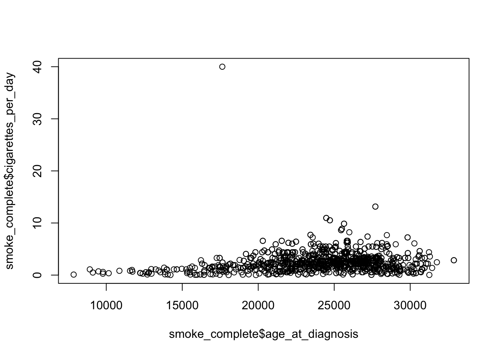
This plot is from base R. It gives you a general idea about the data, but isn’t very aesthetically pleasing. Our work today will focus on developing more refined plots using ggplot2, which is part of the tidyverse.
Intro to ggplot2 and scatterplots
There are three steps to creating a ggplot. We’ll start with a scatterplot, which is used to compare quantitative (continuous) variables.
bind data: create a new plot with a designated dataset
# basic ggplotggplot(data = smoke_complete) # bind data to plot
The last line of code creates an empty plot, since we didn’t include any instructions for how to present the data.
specify the aesthetic: maps the data to axes on a plot
This adds labels to the axis, but no data appear because we haven’t specified how they should be represented
add layers: visual representation of plot, including ways through which data are represented (geometries or shapes) and themes (anything not the data, like fonts)
ggplot(data = smoke_complete,mapping =aes(x = age_at_diagnosis, y = cigarettes_per_day)) +geom_point() # add a layer of geometry
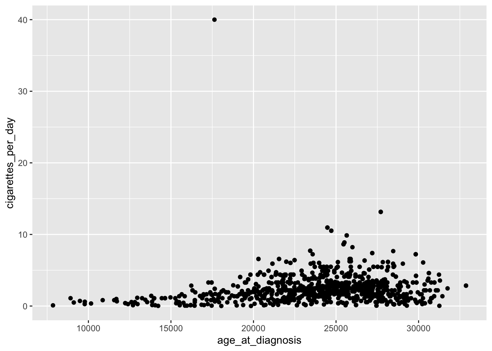
The plus sign (+) is used here to connect parts of ggplot code together. The line breaks and indentation used here represents the convention for ggplot, which makes the code more readible and easy to modify.
In the code above, note that we don’t need to include the labels for data = and mapping =. It’s also common to include the mapping (aes) in the geom, which allows for more flexibility in customizing (we’ll get to this later!).
ggplot(smoke_complete) +geom_point(aes(x = age_at_diagnosis, y = cigarettes_per_day))
This plot is identical to the previous plot, despite the differences in code.
Customizing plots
Now that we have the data generally displayed the way we’d like, we can start to customize a plot.
# add transparency with alphaggplot(smoke_complete) +geom_point(aes(x = age_at_diagnosis, y = cigarettes_per_day), alpha =0.1)
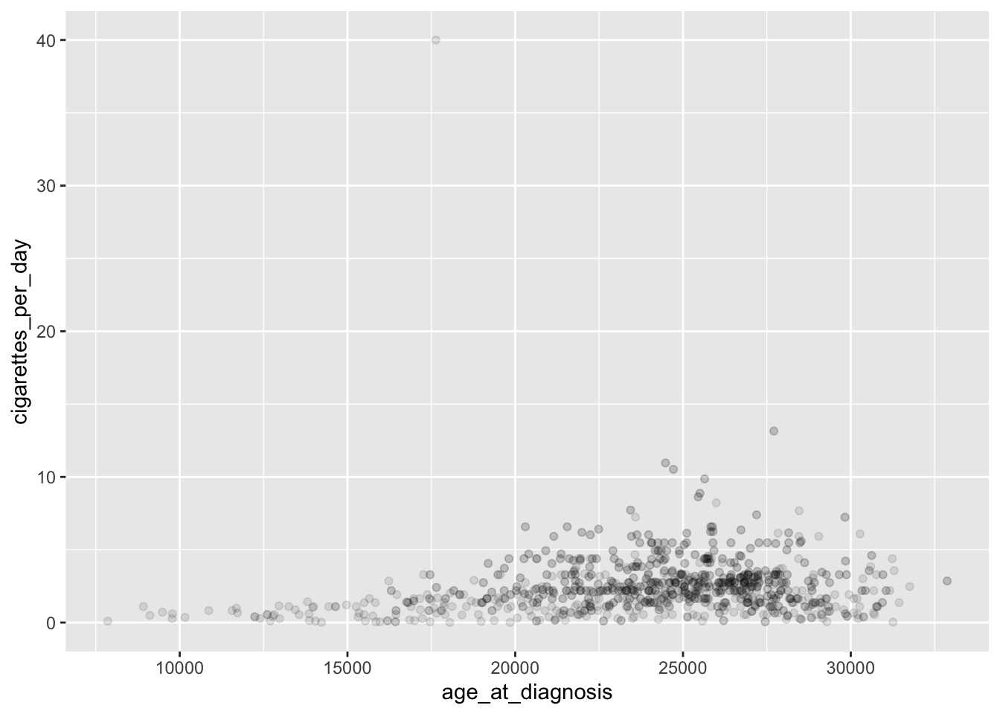
Transparency is useful to help see the distribution of data, especially when points are overlapping.
# change color of pointsggplot(smoke_complete) +geom_point(aes(x = age_at_diagnosis, y = cigarettes_per_day), alpha =0.1, color ="green")
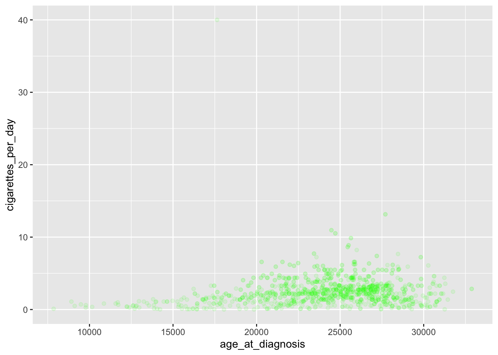
For more information on colors available, look here.
We can also color points based on another (usually categorical) variable:
# plot disease by colorggplot(smoke_complete) +geom_point(aes(x = age_at_diagnosis, y = cigarettes_per_day, color = disease), alpha =0.1)
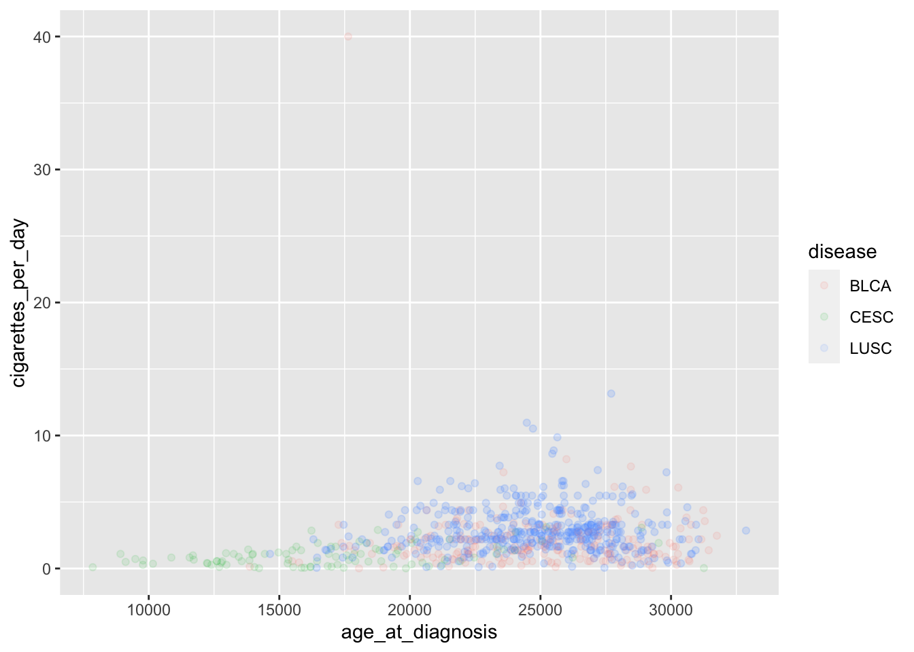
Note the location of color= with the other aesthetics, as well as the lack of quotation marks around disease.
Coloring by a variable automatically adds a legend as well.
We can also change the general appearance of the plot (background colors and fonts):
ggplot(smoke_complete) +geom_point(aes(x = age_at_diagnosis, y = cigarettes_per_day, color = disease), alpha =0.1) +theme_bw() # change background theme
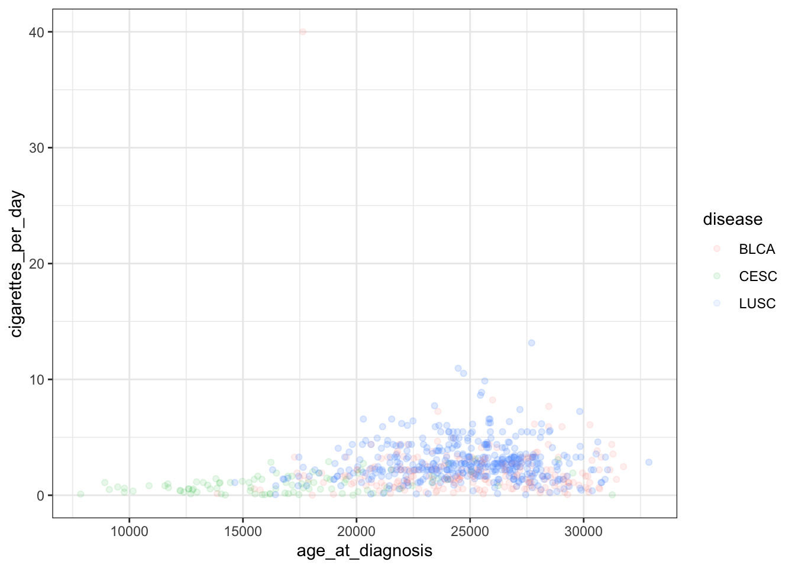
This adds another layer to our plot representing a black and white theme. A complete list of pre-set themes is available here, and we’ll cover ways to customize our own themes later in this lesson.
While the axes are currently sufficient, they aren’t particularly attractive. We can add a title and replace the axis labels using labs:
ggplot(smoke_complete) +geom_point(aes(x = age_at_diagnosis, y = cigarettes_per_day, color = disease), alpha =0.1) +labs(title ="Age at diagnosis vs cigarettes per day", # titlex="age (days)", # x axis labely="cigarettes per day") +# y axis labeltheme_bw()
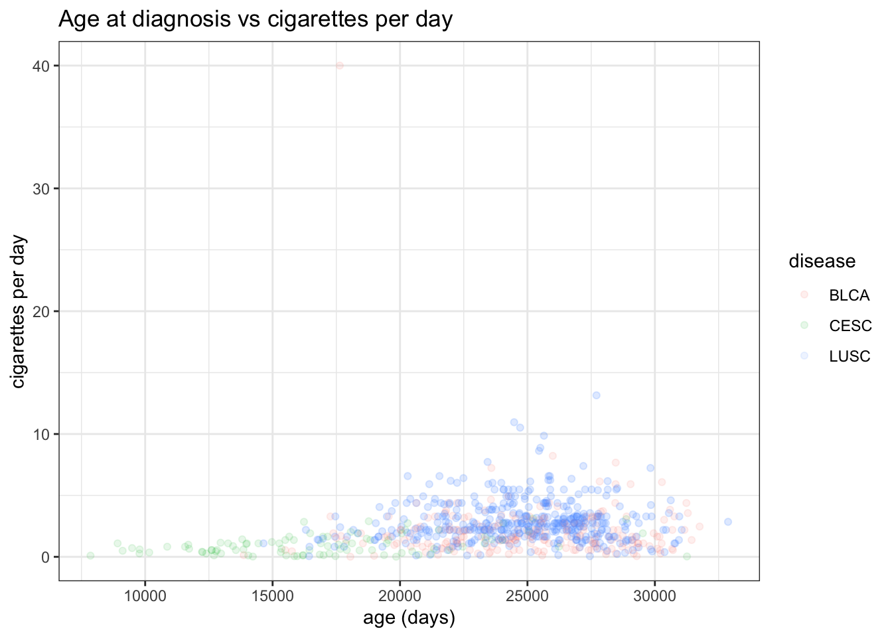
Another common feature to customize involves the orientation and appearance of fonts. While this can be controlled by default themes like theme_bw), you can also control different parts independently. For example, we can make a dramatic modification to all text in the plot:
ggplot(smoke_complete) +geom_point(aes(x = age_at_diagnosis, y = cigarettes_per_day, color = disease)) +theme(text =element_text(size =16)) # increase all font size
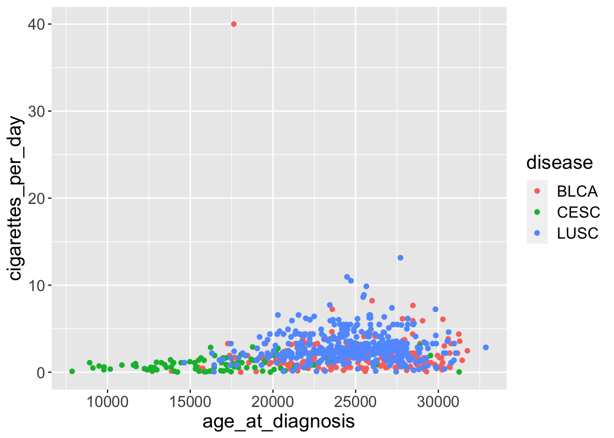
Alternatively, you can alter only one specific type of text:
ggplot(smoke_complete) +geom_point(aes(x = age_at_diagnosis, y = cigarettes_per_day, color = disease)) +theme(axis.text.x =element_text(angle =90, hjust =0.5, vjust =0.5)) # rotate and adjust x axis text
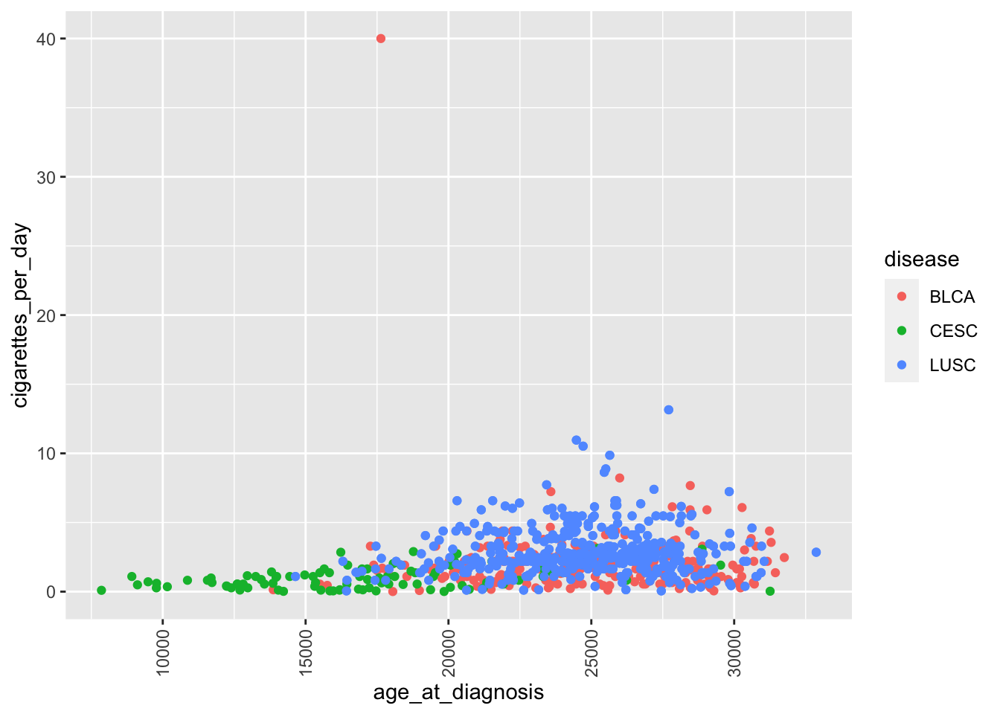
This rotates and adjusts the horizontal and vertical arrangement of the labels on only the x axis. Of course, you can also modify other text (y axis, axis labels, legend).
After you’re satisfied with a plot, it’s likely you’d want to share it with other people or include in a manuscript or report.
# create directory for outputdir.create("figures")
# save plot to fileggsave("figures/awesomePlot.jpg", width =10, height =10, dpi =300)
This automatically saves the last plot for which code was executed. You can view your figures/ directory to see the exported jpeg file. This command interprets the file format for export using the file suffix you specify. The other arguments dictate the size (width and height) and resolution (dpi).
Challenge-scatterplot
Create a scatterplot showing age at diagnosis vs years smoked with points colored by gender and appropriate axis labels.
Box and whisker plots
Box and whisker plots compare the distribution of a quantitative variable among categories.
# creating a box and whisker plotggplot(smoke_complete) +geom_boxplot(aes(x = vital_status, y = cigarettes_per_day))
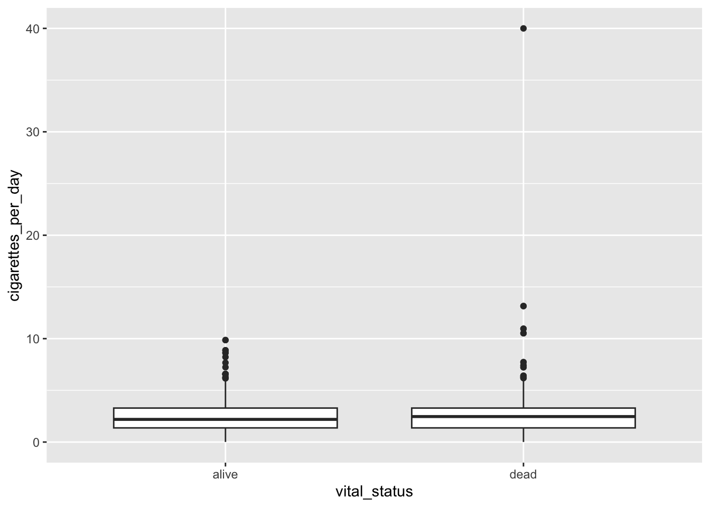
The main differences from the scatterplots we created earlier are the geom type and the variables plotted.
We can change the color similarly to scatterplots:
# adding colorggplot(smoke_complete) +geom_boxplot(aes(x = vital_status, y = cigarettes_per_day), color ="tomato")
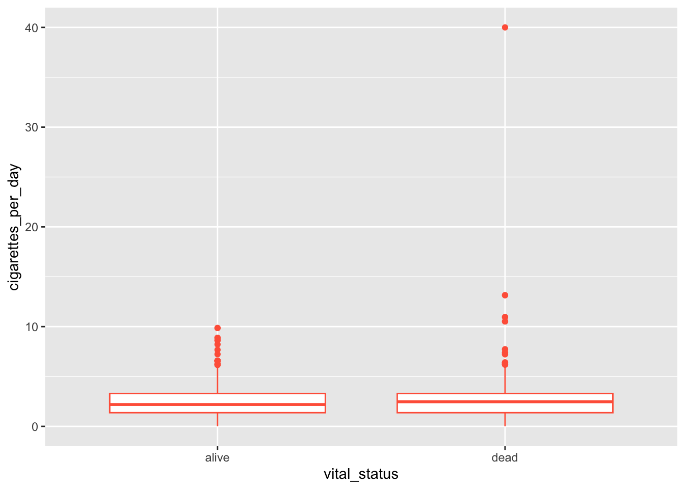
It seems weird to change the color of the entire box, though. A better option would be to add colored points to a black box and whisker plot:
# adding colored points to black box and whisker plotggplot(smoke_complete) +geom_boxplot(aes(x = vital_status, y = cigarettes_per_day)) +geom_jitter(aes(x = vital_status, y = cigarettes_per_day), alpha =0.3, color ="blue")
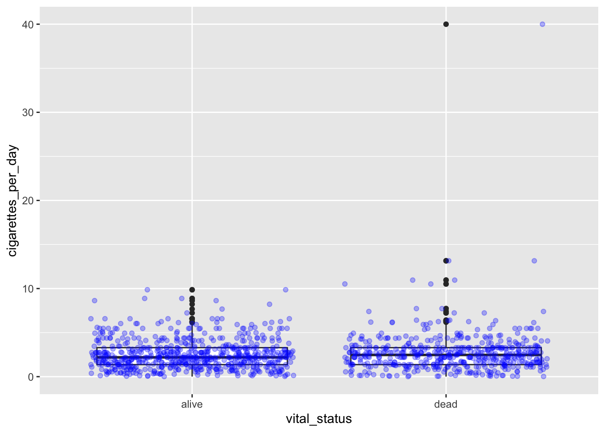
Jitter references a method of randomly offsetting points slightly to allow them to be seen and interpreted more easily.
This method, however, effectively duplicates some data points, since all points are shown with jitter and the boxplot shows outliers. You can use an option in geom_boxplot to suppress plotting of outliers:
# boxplot with both boxes and pointsggplot(smoke_complete) +geom_boxplot(aes(x = vital_status, y = cigarettes_per_day), outlier.shape =NA) +geom_jitter(aes(x = vital_status, y = cigarettes_per_day), alpha =0.3, color ="blue")
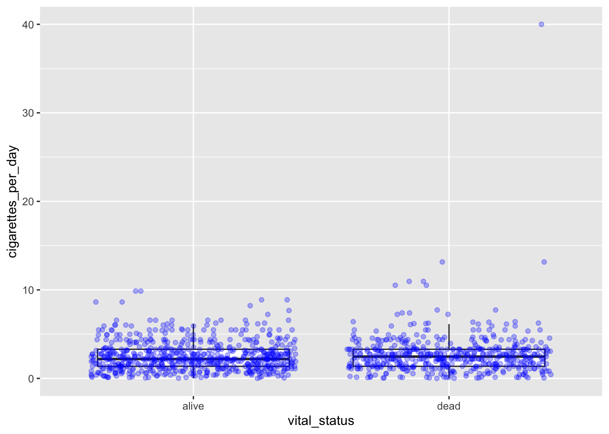
Challenge-comments
Write code comments for each of the following lines of code. What is the advantage of writing code like this?
my_plot <-ggplot(smoke_complete, aes(x = vital_status, y = cigarettes_per_day)) my_plot +geom_boxplot(outlier.shape =NA) +geom_jitter(alpha =0.2, color ="purple")
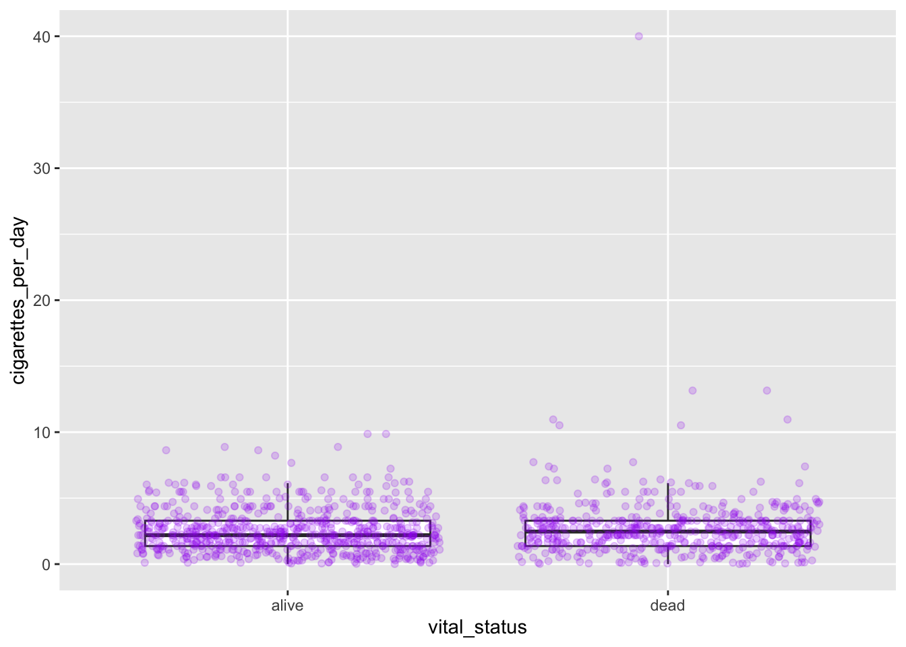
Challenge-order
Does the order of layers in the last plot matter? What happens if jitter is coded before boxplot?
Time series data as line plots
So far we’ve been able to work with the data as it appears in our filtered dataset. Now that we’re moving on to time series plots (changes in variables over time), we need to manipulate the data. We’ll also be working with the birth_reduced dataset, which we created last class (primarily by removing all missing data for year of birth). We’d like to plot the number of individuals in the dataset born by year, so we need to first count our observations based on both disease and year of birth:
# count number of observations for each disease by year of birthyearly_counts <- birth_reduced %>%count(year_of_birth, disease)
We can plot these data as a single line:
# plot all counts by yearggplot(yearly_counts) +geom_line(aes(x = year_of_birth, y = n))
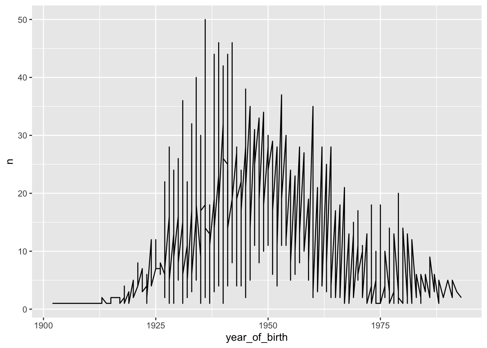
Here, n represents the number of patients born in each year, from the count table created above. The result isn’t very satisfying, because we also grouped by disease. We can improve this by plotting each disease on a separate line, which is more appropriate when there are multiple data points per year:
# plot one line per cancer typeggplot(yearly_counts) +geom_line(aes(x = year_of_birth, y = n, group = disease))
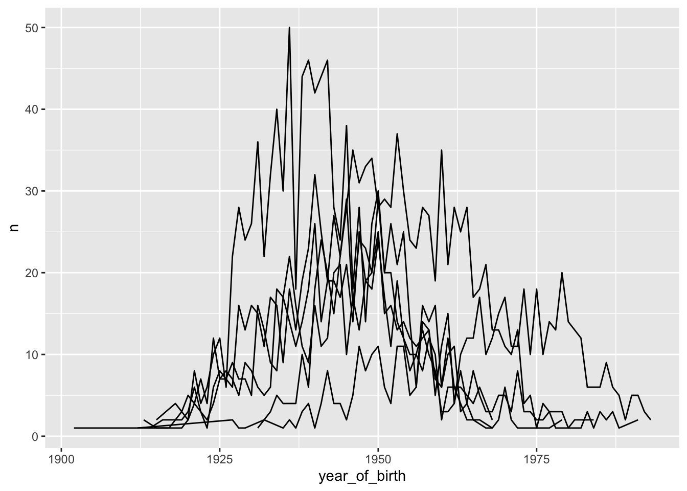
Moreover, we can color each line individually:
# color each line per cancer typeggplot(yearly_counts) +geom_line(aes(x = year_of_birth, y = n, color = disease))
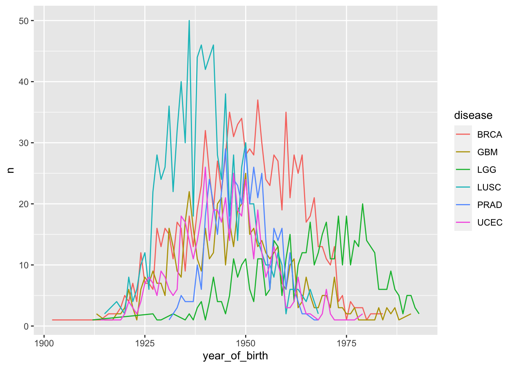
Note that you don’t have to include a separate argument for group = disease because grouping is assumed by color = disease.
Challenge-line
Create a line plot for year of birth and number of patients with lines representing each gender. Hint: you’ll need to manipulate the birth_reduced dataset first.
Challenge-dash
How do you show differences in lines using dashes/dots instead of color?
Faceting
So far we’ve been working on building single plots, which can show us two main variables (for the x and y axes) and additional variables using color (and potentially size/shape/etc). Scientific visualizations often need to compare among categories (e.g., control vs various treatments), which is generally clearer if those categories are presented in separate panels. ggplot provides this capacity through faceting.
Let’s revisit the scatterplot we initially created, plotting age at diagnosis by cigarettes per day, with points colored by disease. We add an additional layer to create facets, or separate panels, for a given variable (in this case, the same variable being used to color points):
# use previous scatterplot, but separate panels by diseaseggplot(smoke_complete) +geom_point(aes(x = age_at_diagnosis, y = cigarettes_per_day, color = disease)) +facet_wrap(vars(disease)) # wraps panels to make a square/rectangular plot
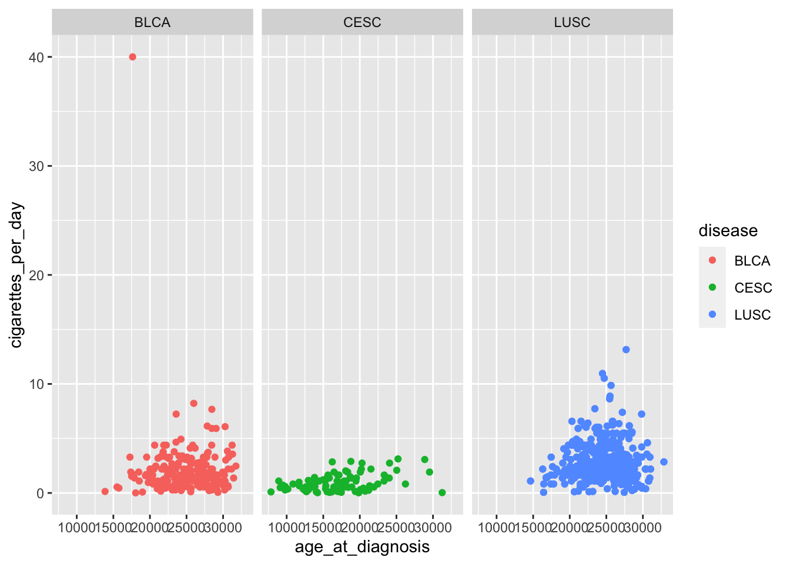
vars is used for faceting in the same way that aes() is used for mapping: it is used to specify the variable to form facet groups.
facet_wrap determines how many rows and columns of panels are needed to create the most square-shaped final plot possible. This becomes useful when there are many more categories:
# add a variable by leaving color but changing panels to other categorical dataggplot(smoke_complete) +geom_point(aes(x = age_at_diagnosis, y = cigarettes_per_day, color = disease)) +facet_wrap(vars(tumor_stage))
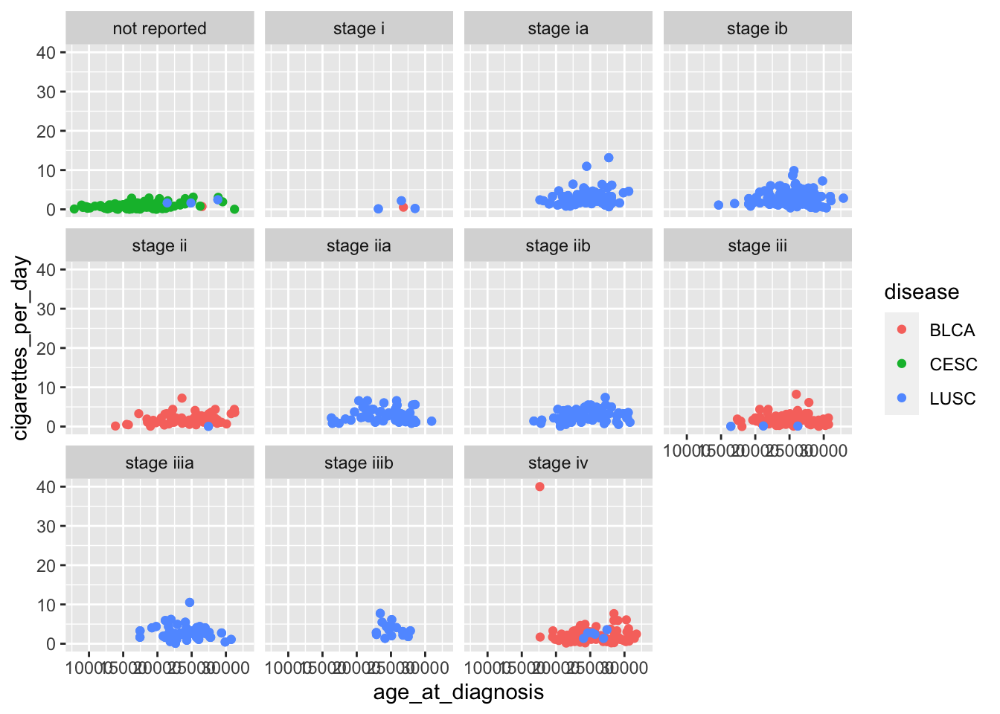
In this case, we’re now visualizing an additional variable (tumor stage), in addition to the original three (age at diagnosis, cigarettes per day, and disease).
If you want to control the specific layout of panels, you can use facet_grid instead of facet_wrap:
# scatterplots with panels for vital status in one rowggplot(smoke_complete) +geom_point(aes(x = age_at_diagnosis, y = cigarettes_per_day, color = disease)) +facet_grid(rows =vars(vital_status))
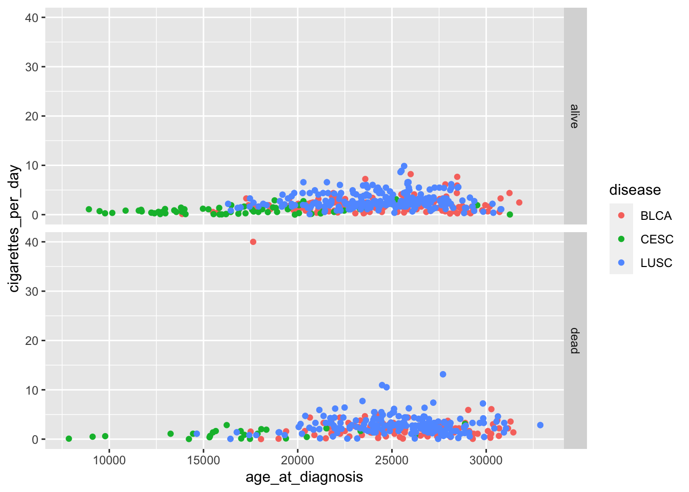
This method can also plot panels in columns.
We may want to show interactions between two categorical variables, by arranging panels into rows according to one variable and columns according to another:
# add another variable using facetingggplot(smoke_complete) +geom_point(aes(x = age_at_diagnosis, y = cigarettes_per_day, color = disease)) +facet_grid(rows =vars(vital_status), cols =vars(disease)) # arrange plots via variables in rows, columns
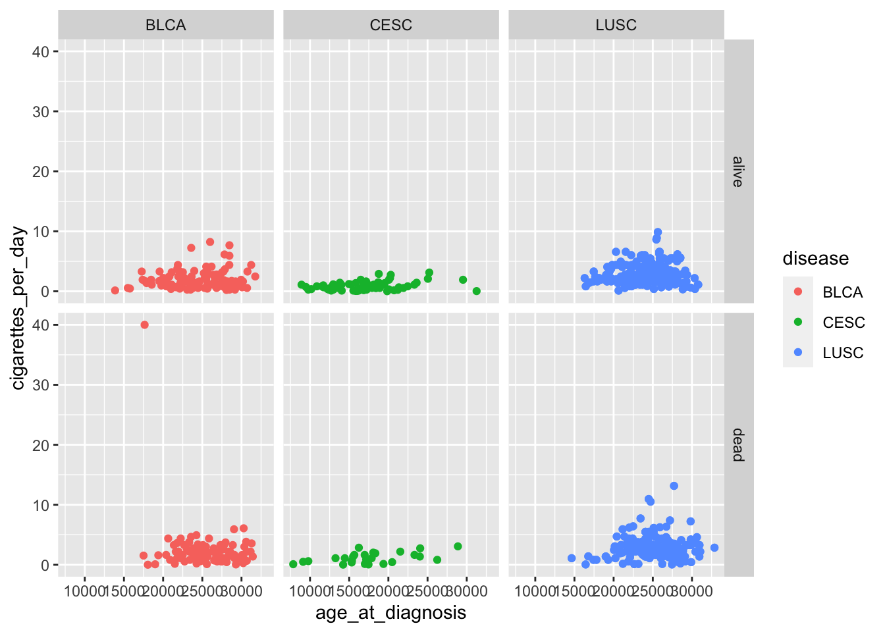
Don’t forget to look at the help documentation (e.g., ?facet_grid) to learn more about additional ways to customize your plots!
Challenge-panels
Alter your last challenge plot of (birth year by number of patients) to show each gender in separate panels.
Challenge-axis
How do you change axis formatting, like tick marks and lines? Hint: You may want to use Google!
Wrapping up
This material introduced you to ggplot as a tool for data visualization, allowing you to now create publication-quality images using R code. Combined with our previous explorations of the basic principles of R syntax, importing and extracting data with base R, and manipulating data using tidyverse, you should be equipped to continue learning about R on your own and developing code to meet your research needs.
If you are interested in learning more about ggplot: - Documentation for all ggplot features is available here. - RStudio also publishes a ggplot cheat sheet that is really handy!